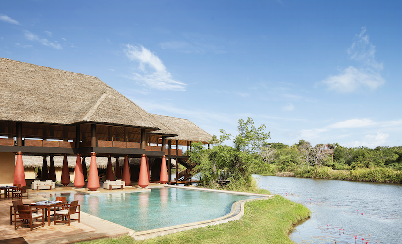

In Sri Lanka, the second kind is the one worth seeking. It lives in a colonial planter's bungalow perched above the clouds where the butler knows your name by afternoon and the tea is from the estate directly behind the garden. It lives in a tented safari camp where the canvas walls do nothing to insulate you from the sound of the jungle — and you realise, gratefully, that they were never meant to. It lives in a beach house where the whole point is the sound of the Indian Ocean twelve steps from your bed.
This is quiet luxury. Not an absence of refinement — but a refinement so assured it has nothing to prove.
The Difference Is in the Details
Loud luxury is about spectacle. Chandeliers. Grand arrivals. Signature scents pumped through the air conditioning. Recognition by title. It is impressive the first time and exhausting by the third.
Quiet luxury is about attention. It is the manager who noticed you did not finish your breakfast papaya and quietly ensured that mangoes appeared instead, unprompted, the following morning. It is the guide who understood from the questions you asked that you wanted more than the standard commentary — and spent the afternoon sharing stories that never make it into guidebooks. It is the pillow menu that exists not to impress you but because someone genuinely considered your sleep.


Hand-picked, never a chain · Interiors that reflect a sense of place
In Sri Lanka — a country where hospitality is not a profession but a cultural instinct — quiet luxury comes naturally. The challenge is finding the properties that have harnessed it without smothering it under branding.
"Quiet luxury in Sri Lanka is not a style or a price point. It is a state of being cared for so thoughtfully that you stop noticing — and simply feel at home."
Where Elevation Changes Everything
Ceylon Tea Trails
There are five colonial planter's bungalows on the Ceylon Tea Trails estate in the Bogawantalawa Valley, and staying in any of them is one of the most singular experiences Sri Lanka offers. Each was built between 1890 and 1920 to house the British tea planters who managed the surrounding estates — and each has been restored with the kind of care that respects what was there rather than replacing it.
You have a butler. You have a chef who will cook whatever you want, whenever you want it, incorporating produce from the estate's own garden. You have a private estate, thousands of acres of tea extending in every direction, and a valley so quiet that on a clear morning you can hear the pluckers working half a kilometre away. The evenings, with a fire lit and the valley mist rolling in, are the kind that print themselves onto memory.


Castlereagh Bungalow · Palmer Garden Suite · Ceylon Tea Trails, Bogawantalawa Valley
Uga Halloowella, Hatton
Uga Halloowella is intimate by design — just six suites in a restored colonial bungalow set within a working tea estate near Hatton. The service is genuinely personal in a way that only small properties can manage: by the second morning, the team knows exactly how you take your tea, what time you prefer to walk, and whether you want silence or conversation at breakfast.
The planter's suite — with its original fireplace, its bathtub positioned to look directly out over the tea rows, its writing desk under a window through which the mist drifts — is one of the most quietly beautiful rooms in Sri Lanka.

Uga Halloowella · Hatton · Six suites. Total seclusion. Tea as far as the eye can see.
Ancient Surroundings, Private Sanctuary
Uga Ulagalla, Anuradhapura
Uga Ulagalla sits within 58 acres of paddy fields and tropical gardens near Anuradhapura — the island's first ancient capital — and the sense of being held gently between two worlds is immediate. Beyond the property boundary, 2,500 years of civilisation. Within it, a sanctuary of pavilions, lotus-filled tanks, and extraordinary stillness.
The pool villas are private in the truest sense: high garden walls, your own pool, and no reason at all to leave unless you want to. The property's naturalist guides take guests on morning cycling routes through the surrounding villages — the kind of encounters that feel like genuine access rather than a managed experience.

Uga Ulagalla · Anuradhapura · Fifty-eight acres between paddy fields and ancient history
Water Garden Sigiriya
The Water Garden is positioned within the ancient gardens surrounding Sigiriya — which means that when the day visitors leave at sunset, you remain. Walking the ancient water gardens at dusk, when the light turns golden and the atmosphere cools, with the rock fortress dark against the fading sky, is an experience available only to guests of this property. That kind of access is the quietest form of luxury there is.

Water Garden Sigiriya · After sunset, the ancient gardens belong only to you
Book an early morning private walk of Sigiriya's water gardens through the Water Garden resort. The mist, the silence, the 5th-century hydraulics still functioning when it rains — this is Sigiriya as it was meant to be experienced.
Beach Houses and Ocean Light
Uga Prava, Tangalle
Uga Prava is a private sanctuary at the end of a long sandy bay near Tangalle — not a hotel in the conventional sense, but a private beach estate that happens to accommodate guests. The heliconia suite sits directly on the beach. The pool extends towards the ocean as if trying to join it. The restaurant operates on the principle that seafood this fresh requires very little done to it.
Tangalle itself is one of the south coast's best-kept secrets — less visited than Mirissa and Unawatuna, its beaches longer and more private, its pace genuinely slow. Prava understands its setting perfectly.

Uga Prava · Tangalle · A private beach estate at the end of Sri Lanka's most unspoiled bay
What Makes the South Coast Different
The south coast's luxury is largely unbuilt. It is the quality of the light at six in the morning when the fishermen are already out. It is the silence between waves. The best properties here do not compete with that — they frame it.
A good south coast property gives you proximity to the beach, food sourced from the morning's catch, a bed good enough that you notice it, and staff who leave you alone when you want to be left alone and appear, somehow, precisely when you want company. The ones that get it right are worth travelling around the world for.
"The south coast's great gift is that it has nothing to prove. The beach is there. The light is there. The fish are fresh. The rest — the very best of the rest — is Uga Prava."
The Properties Worth Trusting
The quiet luxury tier in Sri Lanka is not large. There are perhaps twenty to thirty properties across the island that genuinely deliver it — the right combination of physical environment, genuine hospitality, intelligent design, and a sense of place that feels earned rather than manufactured.
They are not always the most expensive properties in their area. They are not always the most prominent or the most photographed. They are the ones that guests return to — sometimes for years — because the experience of being there is irreplaceable.
Finding these properties requires knowledge, relationships, and time on the ground that most travellers understandably do not have. When we place you somewhere, it is not because a brochure was convincing. It is because we have stayed there, eaten there, observed the service, and spoken to the owner — and because we believed, specifically, that it was right for you.